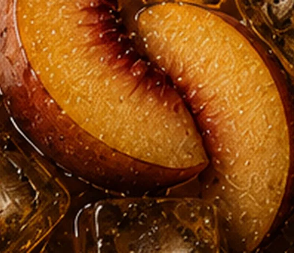
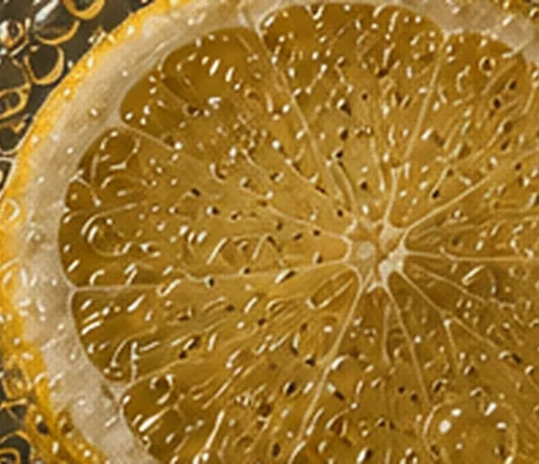
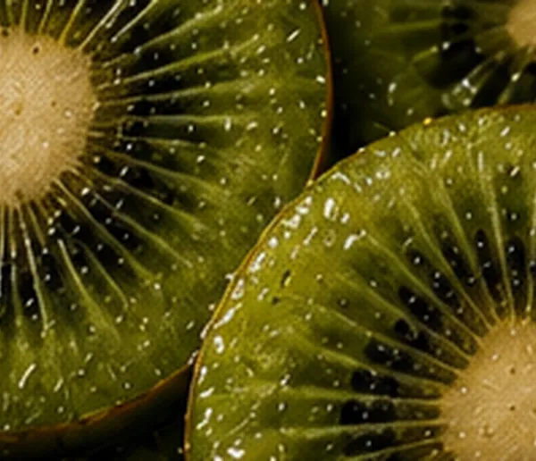
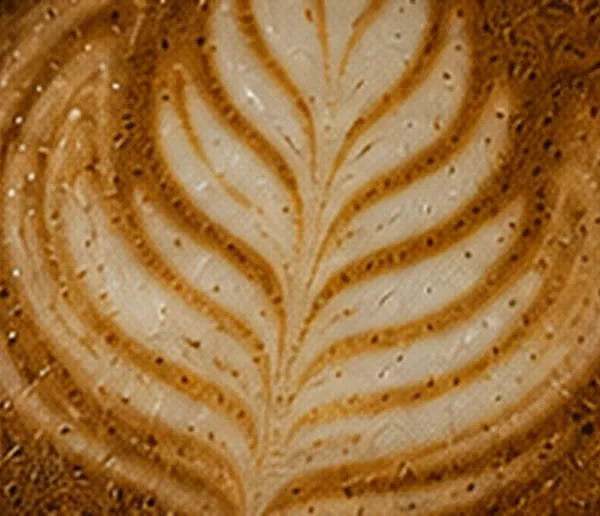

mood to play
By entering, you agree to our mindful brewing rituals.
ATMOSPHERE
Today: Rainy Matcha Mood
CLASSIC LATTE 555 C
CUP SIZE
15 tracks · about 60 min
BREWING…
#BATCH-000-MOOD
원두를 고르는 중...
🥤

LEMON TEA 106 C
REFRESHING · CITRUS · SUMMER BLEND
카드·목록을 길게 누르면(웹: 호버) iTunes 30초 미리듣기
0:000:00
BREWING RECEIPT
#BATCH-000-MOOD
MUSIC NOTES